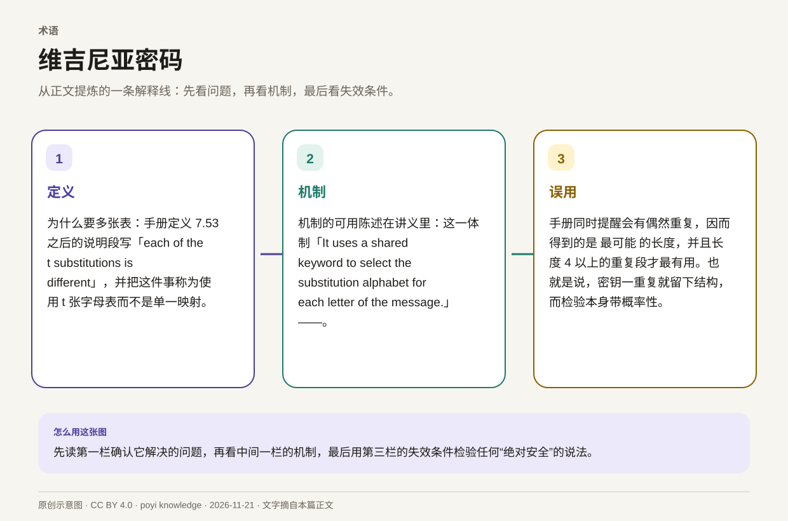

原理与机制
术语：维吉尼亚密码（Vigenère）。机制的可用陈述在讲义里：这一体制「It uses a shared keyword to select the substitution alphabet for each letter of the message.」——关键词的第 i 个字母决定第 i 个明文字母用哪一张表；因为关键词通常短于报文，发送方把它重复到与明文等长。手册一侧对同一构造给的是带周期的移位写法，见下面的为什么一节。

为什么重要
为什么要多张表：手册定义 7.53 之后的说明段写「each of the t substitutions is different」，并把这件事称为使用 t 张字母表而不是单一映射。后果是同一个明文字母在不同位置上不再总映到同一个密文字母，单字母频率的对应被打散；手册还把移位密码算作周期 t = 1 的特例。要照录的是同一段落印出的位置序列写作 i、i+s、i+2s，而该定义把周期记作 t——这份副本如此印，该条目不代改。
应用与实例
用法层面讲义给的是操作口径：这一体制「It could be used with a table, so the two parties no longer needed a cipher disk.」——表可以查，也可以由双方各自记住，代价是密钥退化成一个容易分享的词；讲义并举一个以 LEMON 为关键词、把密钥重复到与明文等长的算例。这里可登记的是一张表加一个共享词这件做法，而不是它比密码盘更强的评价。复算记在 calculations 中：按留存件印出的 ATTACKATDAWN / LEMONLEMONLE 得到 LXFOPVEFRNHR，三条路径同时命中该行印出的密文：同余加法、逐行读自留存件第 122 行印出表列的查位，以及按手册该行印出的式子 ci = mi + ki mod s 直接求值；留存件第 126-129 行印出的四次查表也由该表列与式子复现；4598 字母样本以关键词 LEMON 加密后，可拆成五个各自恰为单一凯撒位移的交错子列，与留存件所说的第 1、6、11 位同用 L、第 2、7、12 位同用 E 相对应；另复现留存件明载的两条等价关系——位移密码即周期 t=1 的维吉尼亚，以及周期 2 与 3 复合等于周期 6 的简单维吉尼亚。博福特自反性（c = k − m 两次作用复原明文）亦按原文所述验证。
边界与攻击面
攻破路径写在手册 §7.3.5 的第 (iv) 条：「Kasiski's method provides a general technique for cryptanalyzing polyalphabetic ciphers with repeated keywords」，依据是相同的明文段被同一段密钥加密会得到相同的密文段，于是手册接着印「Consequently one expects the number of characters between the beginning of repeated ciphertext segments to be a multiple of the keyword length」，取这些距离的公因子即可推定关键词长度（本副本把 number 一词按硬回车切成 num- 与 ber 两行）；手册同时提醒会有偶然重复，因而得到的是最可能的长度，并且长度 4 以上的重复段才最有用。也就是说，密钥一重复就留下结构，而检验本身带概率性。
历史与背景
年代与命名：§7.8 把 1586 年的著作与其混合棋盘（表头与表侧都打乱）以及自动密钥主张系在同一位作者名下，并明确否认简单形态出自其人——该注记说那个更不安全的简单体制是被错误归属的。因为这份副本把人名印成带杂字的形式，该条目不复制该拼写、也不引那句原话，只登记两件事：1586 年这部论著落在 1450–1600 的窗口里，以及归属问题本身由手册提出。
逐步示例与核验
定义检查模型
上位概念 → 区别特征 → 正例 → 反例 → 易混边界。正例必须落在外延内；反例必须刚好跨过边界；同义词不能代替定义。
参考出处
- Wikipedia search entry for 维吉尼亚密码. https://zh.wikipedia.org/w/index.php?search=%E7%BB%B4%E5%90%89%E5%B0%BC%E4%BA%9A%E5%AF%86%E7%A0%81
- RFC 4949: Internet Security Glossary, Version 2. https://www.rfc-editor.org/rfc/rfc4949